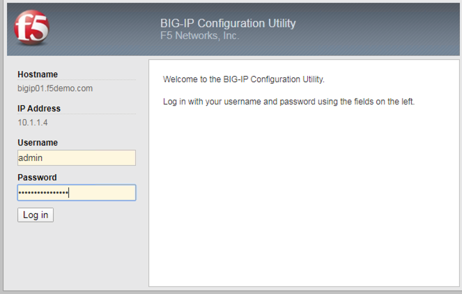
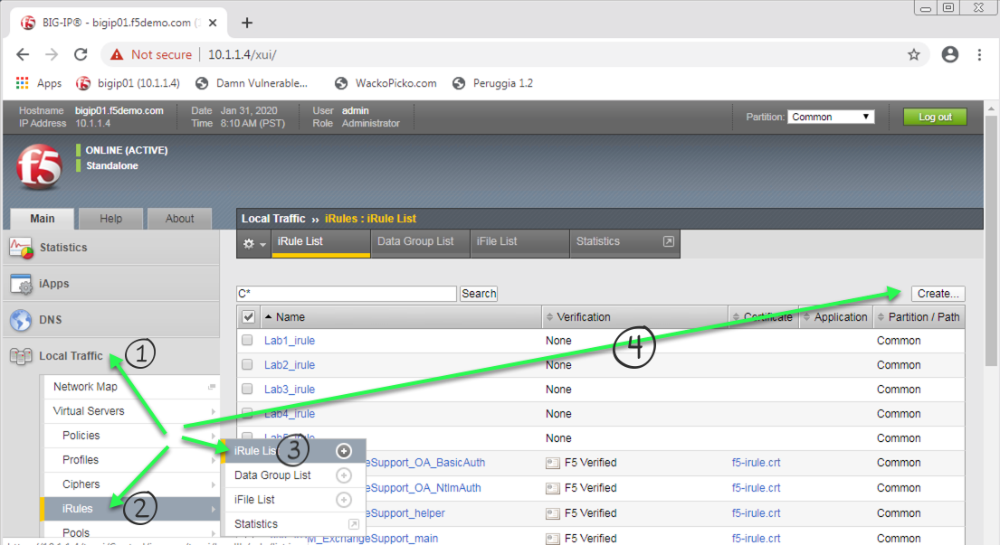
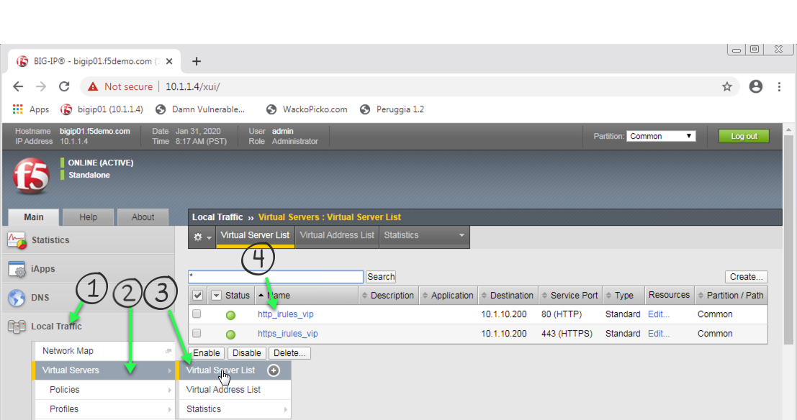
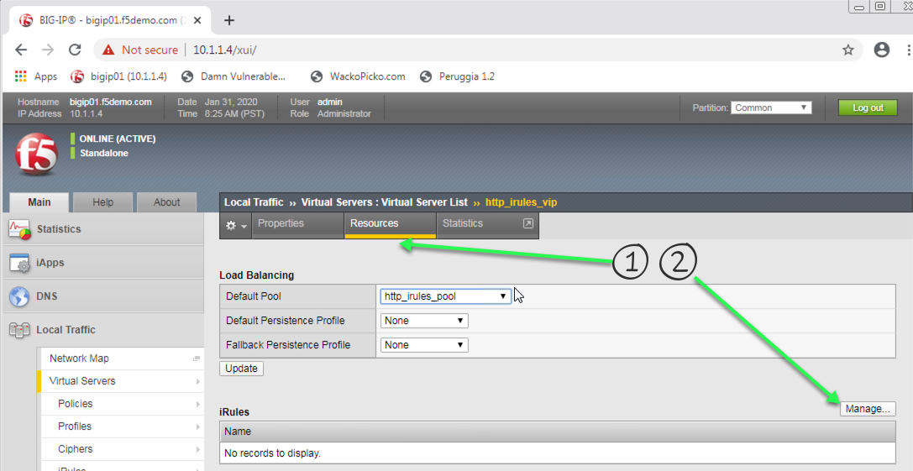
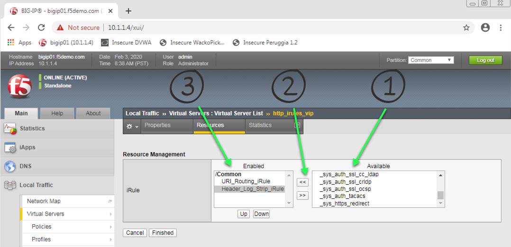
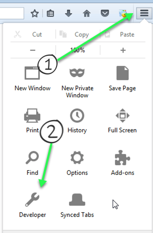

2.1.1.2. Lab 2 - Log and Change Headers¶
Your iRule should:
- Log all HTTP request headers.
- Log all HTTP response headers.
- Remove the header named Server from all HTTP responses.
Attention
OPTIONAL: Instead of removing the Server header in the response, change the value of the Server header to Microsoft-IIS/7.0.
Important
- Estimated completion time: 15 minutes
Open Chrome Browser
Enter https://bigip1 into the address bar and hit Enter
- Login with username: admin
password: admin.F5demo.com
Click Local Traffic -> iRules -> iRules List
Click Create button
Enter Name of Header_Log_Strip_iRule
Enter Your Code
Click Finished
Click Local Traffic -> Virtual Servers -> Virtual Server List
Click on http_irules_vip
Click on the Resources tab
Click Manage button for the iRules section
Click on Header_Log_Strip_iRule from the Available box and click the << button, thus moving it to the Enabled box, your first and now second iRule should be in the Enabled box.
Click the Finished button
Open the Firefox browser
Click the 3 horizontal line button on the far right of the address bar
Use developer tools in Mozilla, or use Chrome to view headers
Enter http://dvwa.f5lab.com/ and ensure you get there
Now enter http://wackopicko.f5lab.com/
Finally, enter http://peruggia.f5lab.com/ and ensure you can get to that app
Look at the headers for each of your requests. Did you log them all? What is the value of the Server header?

{kind=link}
{kind=link}
{kind=link}
{kind=link}
{kind=link}
{kind=link}
Attention
OPTIONAL: Instead of removing the Server header in the response, change the value of the Server header to Microsoft-IIS/7.0.
{kind=link}
Hint
Basic Hint if you need a hint here is some example code:
Link to DevCentral: https://clouddocs.f5.com/api/irules/HTTP__header.html
If you are really stuck, here is what we are looking for: